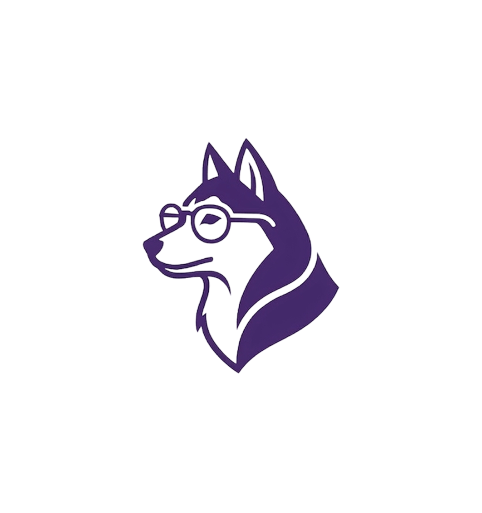
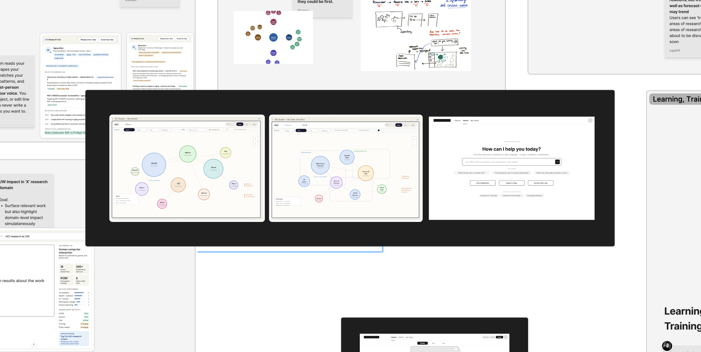
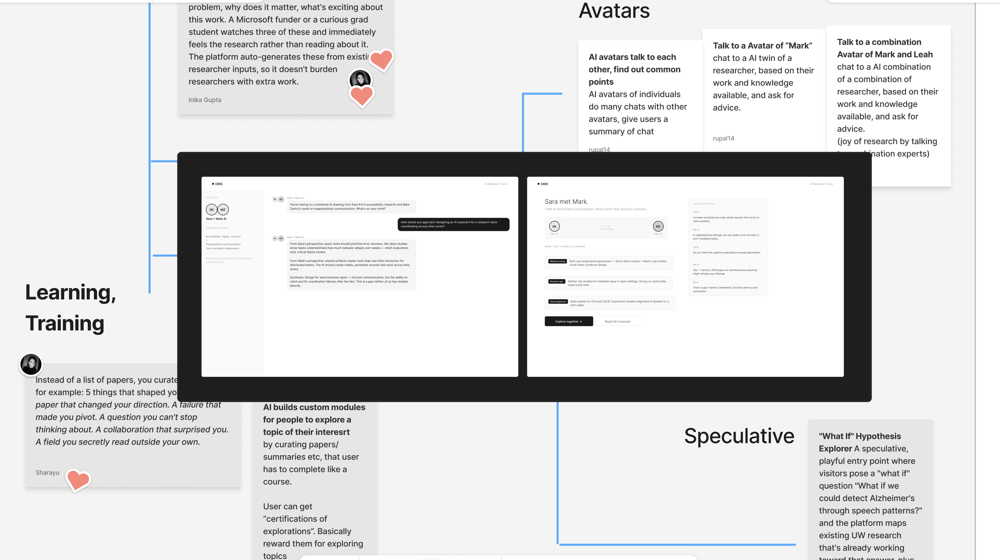
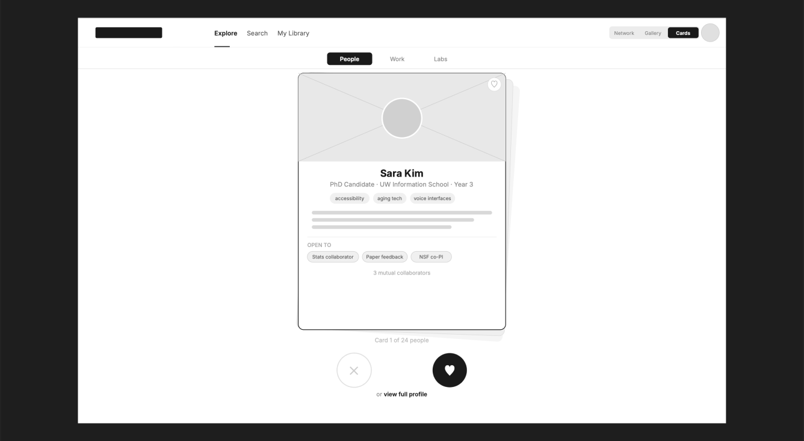

Dub's Research Hub
Making UW research discoverable, navigable, and actionable


- ORIS is the infrastructure and administrative backbone of UW research — the plumbing of a $1.74B enterprise.
- ORIS mission: seed interdisciplinary programs, facilitate partnerships, and promote research impact.
- The shift: from reducing admin work for researchers → to advancing UW research impact.
- Admin systems ≠ storytelling systems. A new layer is needed.

Researcher profiles are scattered across lab websites,
which makes them difficult to discover and to keep track of what someone's working actively on.
AI-driven efficiency has accelerated publication volume and led to highly targeted research.
Who you know still determines who you trust and work with.
Early-mid career researchers face barriers to collaboration as they are building their networks.
Researcher profiles are scattered and outdated — and consolidation alone can't fix it.
Academia is structurally competitive, and ideas are guarded until the time is right.
External stakeholders find academic databases intimidating and inaccessible.
Early- to Mid-Career Researchers
Building a credible independent research presence and seeking to be discovered and to collaborate.
External Stakeholders
Finding the right academic partner quickly, understanding UW research strengths and entry points.
Seasoned Researchers
Associate/full professors and PIs — benefit from cross-university visibility and signaling.
One platform, two distinct value streams
Both user groups require the same underlying data and discovery mechanisms. Separate systems would fragment information again.
External Visibility and Collaboration
- Research is fragmented across lab sites, faculty pages, and external platforms
- Information is inconsistent and outdated
- Discovery requires manual effort
Internal Visibility and Collaboration
- Visibility is limited to immediate networks
- Cross-department discovery is weak
- Collaboration depends on informal channels
UW lacks a unified system that can aggregate research across the university, make it discoverable and navigable, and support both discovery (finding) and signaling (showing) — for audiences inside and outside.
- One place to explore UW research
- Clear entry points for collaboration
- Structured visibility of research areas and people
- Enables researchers to discover work across UW
- Supports collaboration and interdisciplinary exploration
- Reduces reliance on informal networks


Can we visualize connections between domains, subdomains, researchers, and labs through interactive network maps — making research relationships navigable rather than hidden?

Give researchers a single, living profile that automatically surfaces their latest work, active projects, and evolving collaborations — no manual updates required.

Can we let researchers skim AI-generated paper summaries one at a time, save what's interesting with a single action, and revisit their collection later — reducing the effort of staying current?

We built early prototypes for each Key Idea and put them in front of users — testing assumptions, probing reactions, and identifying which directions were worth pursuing further.


We tested with 8 participants, giving them open access to explore the prototype freely and share their unfiltered reactions as they navigated each feature.
Using the insights gathered, we mapped every feature against user responses and prioritized what to carry forward into the final prototype.

✓ What Worked
Network visualizations made research discovery more intuitive and helped users uncover unexpected connections across people and domains.
Learn/Shortlist browsing was consistently well received, giving users a lightweight way to explore researchers and research without committing to a search.
Researcher profiles helped users quickly understand expertise, interests, and collaboration opportunities, creating confidence in who to engage with.
○ What Needed Refinement
Dense visualizations and information-heavy screens felt overwhelming, making it difficult for users to quickly identify the most relevant information.
Timeline views lacked a clear value proposition, with participants finding them confusing or unnecessary.
Research Reels generated mixed reactions, revealing unclear expectations about the feature's purpose and benefits.
Synthesizing user feedback across all testing sessions, we identified recurring patterns in how people navigated, discovered, and organized information — and used those insights to define the final structure and layout of Dub's Research Hub.

Research data was scraped directly from UW's public platforms and processed using Python to clean, structure, and serve as a live data source for the prototype — giving it real content rather than placeholder copy.
The prototype was built using Claude Code and Warp Code to simulate two key interaction flows of the platform — powered by the scraped UW data to demonstrate what a real, production-ready experience could feel like.
Explore UW research through interactive researcher connections.
Find researchers, topics, and expertise across UW.
Understand expertise, interests, publications, and collaborations.
Ask questions and quickly understand research.
Discover trending topics through curated exploration.
Save and organize researchers and papers.